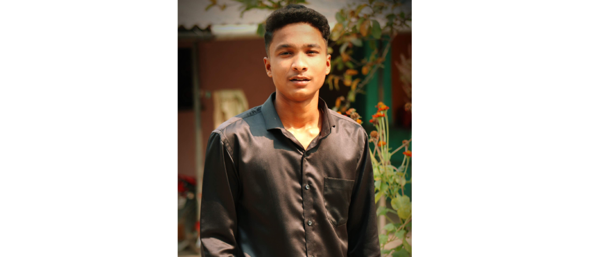

Ms. Kranti Vartak
The class Co-ordinator of SY CS. Well disciplined, punctual and polite teacher and friend too her teaching implements multiple fun-learning techniques to make the subject more easy to understand
Shruti Patil
The DR of Whole CS batch and student council member performing her role with great responsibility

Ketan Patil
The official CR of SY CS class having great communication and team-work skills to represent the class and maintaining the discipline